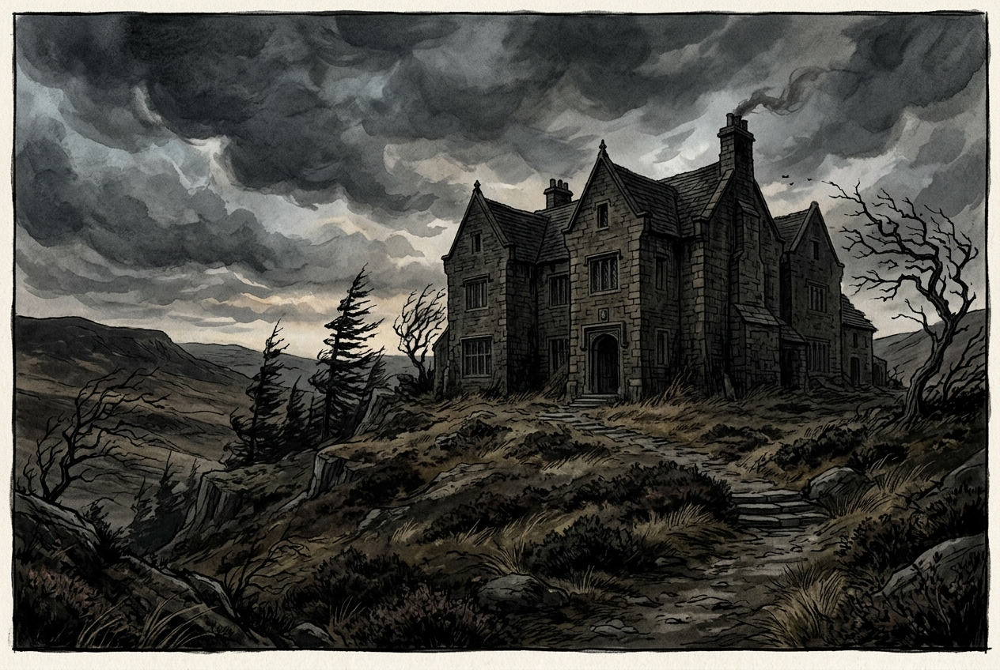
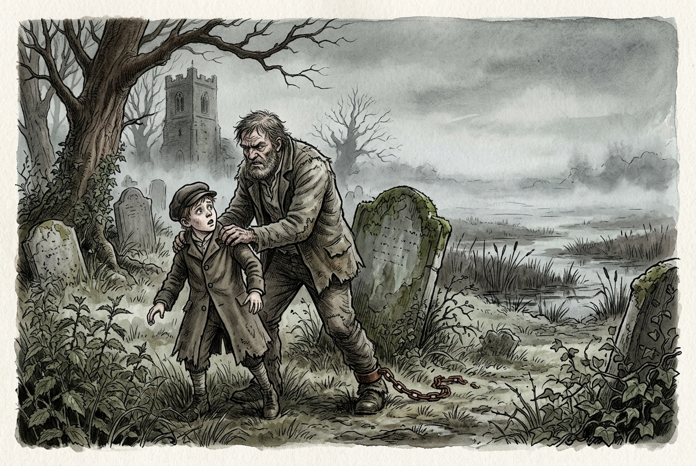

A bilingual margin-annotated reading guide for Anton Chekhov’s satirical fable ‘Удав и кролик’ (The Boa Constrictor and the Rabbit).
A comprehensive guide navigating the single-root directory tree structure of Linux and the purpose of directories like etc, bin, var, and proc.
A developer’s guide to writing automated scripts for social platforms using APIs and browser automation tools like Selenium.
A comprehensive guide to X11, Wayland, Desktop Environments, Window Managers, Dotfiles, and custom rices like Illogical Impulse.
A developer’s guide to writing safe, efficient Bash scripts, using variables, control structures, and error-handling options.
A bilingual margin-annotated reading guide for Anton Chekhov’s humorous 1887 short story ‘Из записок вспыльчивого человека’ (From the Notes of a Hot-Tempered Man).
A line-by-line breakdown of shell scripting, covering shebangs, command substitution, JSON parsing with jq, conditionals, and arithmetic ternary operators.
A developer’s guide to inspecting scripts, debugging execution flows, and resolving frequent JavaScript and network errors.

An annotated English-learning guide to Emily Brontë’s Wuthering Heights Chapter I, complete with vocabulary annotations, cultural context, and literary details.
A developer’s technical guide to computer monitors, detailing panel tech, performance metrics, and interfaces like DisplayPort, HDMI, USB-C, and OCuLink.
An analysis of Charles Bukowski’s literary style, ‘dirty realism’, and major novels like Post Office and Ham on Rye.
A bilingual margin-annotated reading guide for Anton Chekhov’s tragic 1887 short story ‘Отец’ (The Father), reflecting on the burden of family love and parent-child roles.
A bilingual margin-annotated reading guide for Anton Chekhov’s 1886 short story ‘Беда’ (Misfortune / Trouble).
A bilingual margin-annotated reading guide for Anton Chekhov’s short story ‘Лев и Солнце’ (The Lion and the Sun), satirizing provincial vanity and the obsession with foreign medals.
A bilingual margin-annotated reading guide for Anton Chekhov’s 1887 masterpiece ‘Дома’ (Home/Doma), analyzing logic vs. story-telling in education.
Explore different styles of meditation including mindfulness, focused attention, Metta, and body scanning, along with practical tips to build a daily practice.
A developer’s troubleshooting guide resolving common config errors in custom dotfiles like Illogical Impulse, covering VFR, shadows, and layout dispatchers.

An annotated English-learning guide to Charles Dickens’s Great Expectations Chapter I, complete with vocabulary annotations, cultural context, and literary details.
Master the foundational command-line operations for directory navigation, file manipulation, and input-output piping in Linux.
Explore the life, literary innovations, and legacy of Anton Chekhov, the physician who revolutionized modern drama and the short story.
A bilingual margin-annotated reading guide for Anton Chekhov’s poignant 1887 short story ‘Верочка’ (Verochka), analyzing the tragedy of emotional distance and missed connection.
A deep dive into modular configurations, active tiling resize controls, hyprctl operations, and limiting your desktop to exactly 10 persistent workspaces.
Learn how to open, edit, search, and configure the lightweight and intuitive Nano text editor directly from the Linux terminal.
Learn how to manage sessions, split windows into panes, configure shortcuts, and keep your terminal environments alive across SSH sessions.
Master the Linux Stream Editor (sed) to search, preview, replace, and comment out configuration lines in-place using real-world examples.
A comprehensive guide to modal editing, essential shortcuts, navigation, and configuring Neovim/Vim to share the system clipboard.
A bilingual margin-annotated reading guide for Anton Chekhov’s philosophical short story ‘Без заглавия’ (Without a Title).
A summary of Sequent-style Calculus / Natural Deduction rules and axioms.